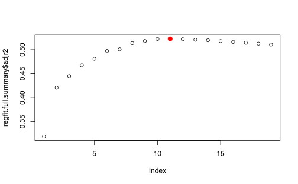
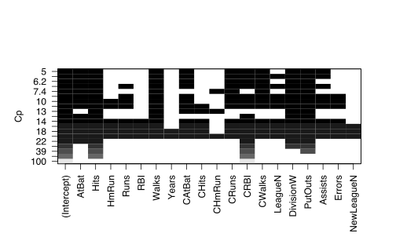
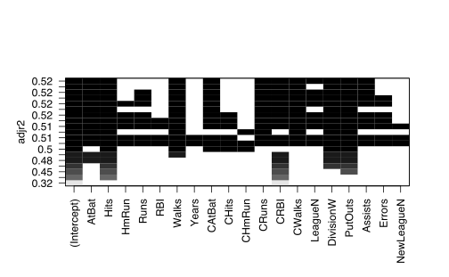
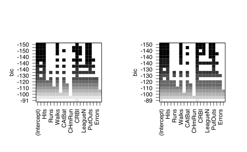
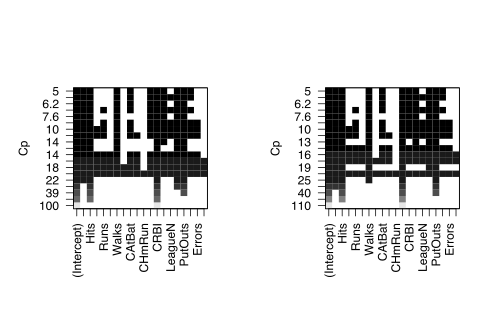
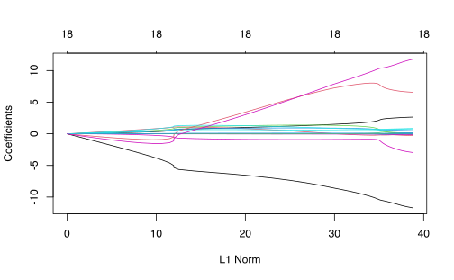

options(tinytex.verbose = TRUE)Capítulo 6 Métodos de selección de variables y regularización.
6.1 Estimación del error de prueba
Recuerden que el error de prueba es el error promedio que se obtiene al usar un método de aprendizaje estadístico para predecir una observación que no está en el conjunto de calibración o entrenamiento. Si se tuviera un conjunto de prueba designado para medir el error de prueba, este último sería muy fácil de calcular. Cuando no se tiene un conjunto de prueba designado, entonces hay dos formas de estimar el error de prueba:
- Estimar indirectamente el error de prueba al hacerle un ajuste al error de entrenamiento. Es decir, agregarle artificialmente la variabilidad no observada, con el fin de corregir el exceso de sesgo producto de sobreajuste.
- Estimar el error de prueba usando técnicas de muestreo sobre el conjunto de entrenamiento.
Por ahora explicaremos la segunda solución:
6.1.1 Técnica de conjunto de validación
Dividir aleatoriamente los datos totales en 2 partes:
- Conjunto de entrenamiento: en donde se ajusta el modelo.
- Conjunto de validación o prueba: en donde el modelo ajustado se usa para realizar predicciones.
Se usa una medida de validación en cada uno de los dos conjuntos (\(MSE\) en el caso cuantitativo)
- Puede que el estimador del error de prueba tenga una varianza muy alta, dependiendo de las observaciones que se incluyeron en la muestra de prueba.
- El error de validación tiende a ser mayor que el error de entrenamiento debido a que se usa un número pequeño de observaciones en el conjunto de entrenamiento. (sobreestimación del error de prueba o validación)
6.1.2 Validación cruzada “Leave-One-Out” (LOOCV)
Una sola observación \(\left( X_{i}, Y_{i} \right)\) se usa en el conjunto de validación. Observaciones restantes, se usan en el conjunto de entrenamiento. Este proceso se repite para \(i=1,\ldots,n\).
Defina
\[\begin{equation*} MSE_{i} =(Y_{i}-\hat{Y}_{i})^{2} \end{equation*}\]
como el error cometido por usar la observación \(i\) como muestra de prueba y el resto de valores como muestra de entrenamiento.
El estimador LOOCV es
\[\begin{equation*} CV_{n} = \frac{1}{n} \sum_{i=1}^{n} MSE_{i} \end{equation*}\]
Ventajas
- Menos sesgo. (Conjunto de prueba de tamaño casi igual que los datos totales). Es decir el error de prueba no tiende a sobrestimarse.
- No hay aleatoriedad en la aproximación del error de prueba producto de la separación conjunto de prueba-entrenamiento.
Desventaja: Puede ser lento, dependiendo de la cantidad de datos.
En el caso de un modelo lineal, se puede calcular \(CV_n\) es una sola iteración:
\[\begin{align*} CV_n=\frac 1 n \sum_{i=1}^n\left(\frac{y_i-\hat y_i}{1-h_{ii}}\right)^2 \end{align*}\]
6.1.3 Validación cruzada \(k-\)veces
Se aplica el mismo principio que LOOCV, pero se divide la muestra en \(k\) distintas partes (folds). El estimador del error de prueba es:
\[\begin{equation*} CV_{k} = \frac{1}{k} \sum_{i=1}^{k} MSE_{i} \end{equation*}\]
donde en este caso \(MSE_i\) es el MSE obtenido al utilizar la \(i\)-ésima parte de la muestra como conjunto de prueba y las restantes \(k-1\) partes como conjunto de entrenamiento. Los valores usuales de \(k\) son 5 o 10. Note que LOOCV es un caso especial de esta técnica de validación tomando \(k=n\).
Ventaja: Es más económico
Desventaja: Nivel intermedio de sesgo respecto a las dos técnicas anteriores.
- Recuerden que entre más grande sea el conjunto de entrenamiento, menos sesgo hay en la estimación de error de prueba.
- El nivel de correlación entre los MSE’s de los conjuntos de prueba aumenta si los tamaños de entrenamiento aumentan. Por lo tanto la varianza del error de prueba estimado es mayor en estos casos.
\[\begin{equation*} \frac{n}{2} < \frac{(k-1)n}{k} < n-1 \end{equation*}\]
6.1.4 Validación cruzada para clasificación
Se usa
\[\begin{equation*} CV_{n} = \frac{1}{n} \sum_{i=1}^{n} Err_{i} \end{equation*}\]
donde \(Err_i = I_{Y_i \neq \hat{Y}_{i}}\) y \(CV_{k}\) se define de manera análoga.
6.1.5 Otras medidas de error de prueba
6.1.5.1 \(R^2\) ajustado
Recuerde que \(R^2 = 1 - \dfrac{RSS}{TSS}\). Como \(RSS\) decrece si se le agrega más variables, entonces \(R^2 \nearrow 1\). Recuerden que \(RSS = \sum(y_i-\hat{y}_i)^2\) y \(TSS = \sum(y_i-\bar{y}_i)^2\). En este caso definimos:
\[R^2 \text{ ajustado}= 1-\dfrac{\dfrac{RSS}{n-p-1}}{\dfrac{TSS}{n-1}}\]
6.1.5.2 \(C_p\) de Mallows
Este estadístico se define como
\[ C_p = \dfrac{RSS}{\hat\sigma^2} + 2p-n \]
donde \(p\) es el número de predictores y \(\hat\sigma^2\) es el estimador de la varianza de los errores \(\epsilon\). Si \(\hat\sigma^2\) es insesgado de \(\sigma^2\), entonces \(C_p\) es un estimador insesgado del \(MSE\) de prueba.
Para regresión ordinaria sabemos que \(\hat{\boldsymbol{\beta}}_{p}=\left(\mathbf{X}_{p}^{\prime} \mathbf{X}_{p}\right)^{-1} \mathbf{X}_{p}^{\prime} \mathbf{Y}\). Nuestro caso ideal sería hacer el MSE lo más pequeño posible entre todos los posibles modleos, \[\begin{equation*} \mathrm{E}\left[\hat{\boldsymbol{\beta}}_{p}-\boldsymbol{\beta}\right]^{2}. \end{equation*}\]
Con esto en mente, calculemos el RSS del modelo,
\[\begin{equation*} \begin{aligned} \operatorname{RSS}(p) &=\sum_{n=1}^{N}\left(y_{n}-\mathbf{x}_{n} \hat{\boldsymbol{\beta}}_{p}\right)^{2} \\ &=\left(\mathbf{Y}-\mathbf{X}_{p} \hat{\boldsymbol{\beta}}_{p}\right)^{\prime}\left(\mathbf{Y}-\mathbf{X}_{p} \hat{\boldsymbol{\beta}}_{p}\right) \\ &=\mathbf{Y}^{\prime}\left(\mathbf{I}_{N}-\mathbf{X}_{p}\left(\mathbf{X}_{p}^{\prime} \mathbf{X}_{p}\right)^{-1} \mathbf{X}_{p}^{\prime}\right) \mathbf{Y} \end{aligned} \end{equation*}\]
Usando este resultado para matrices
\[\begin{equation*} \mathrm{E}\left[\mathbf{Y}^{\prime} \mathbf{A Y}\right]=\mathrm{E}\left[\mathbf{Y}^{\prime}\right] \mathbf{A E}[\mathbf{Y}]+\operatorname{tr}[\mathbf{\Sigma} \mathbf{A}] \end{equation*}\]
y donde \(\boldsymbol{\Sigma}\) es la matriz de covarianza de \(\mathbf{Y}\), encontramos que
\[\begin{equation*} \begin{aligned} \mathrm{E}[\operatorname{RSS}(p)] &=\mathrm{E}\left[\mathbf{Y}^{\prime}\left(\mathbf{I}_{N}-\mathbf{X}_{p}\left(\mathbf{X}_{p}^{\prime} \mathbf{X}_{p}\right)^{-1} \mathbf{X}_{p}^{\prime}\right) \mathbf{Y}\right] \\ &=\mathrm{E}\left[\hat{\boldsymbol{\beta}}_{p}-\boldsymbol{\beta}\right]^{2}+\operatorname{tr}\left[\mathbf{I}_{N}-\mathbf{X}_{p}\left(\mathbf{X}_{p}^{\prime} \mathbf{X}_{p}\right)^{-1} \mathbf{X}_{p}^{\prime}\right] \sigma^{2} \\ &=\mathrm{E}\left[\hat{\boldsymbol{\beta}}_{p}-\boldsymbol{\beta}\right]^{2}+\sigma^{2}\left(N-\operatorname{tr}\left[\left(\mathbf{X}_{p}^{\prime} \mathbf{X}_{p}\right)\left(\mathbf{X}_{p}^{\prime} \mathbf{X}_{p}\right)^{-1}\right]\right) \\ &=\mathrm{E}\left[\hat{\boldsymbol{\beta}}_{p}-\boldsymbol{\beta}\right]^{2}+\sigma^{2}(N-p) \end{aligned} \end{equation*}\]
Note que si el modelo verddero tiene \(p\) parametros, entocnes \(\mathrm{E}\left[\mathrm{C}_{p}\right]=p\). Esto muestra por qué, si un modelo es correcto, \(\mathrm{C}_{p}\) tenderá a estar cerca de \(p\)
Un problema con el criterio \(\mathrm{C}_{p}\) es que tenemos que encontrar una estimación apropiada de \(\sigma^{2}\) para usar con todos los valores de \(p\).
6.1.5.3 Estimador de máxima verosimilitud (MLE)
Supongamos para el conjunto de datos disponible una medida de ajuste del modelo \(-\ln L(\hat{\beta} | x)=\ell(\beta)\). Así si el valor es grande, entonces los parámetros \(\beta\)s serían los correctos. Si se define \(\overline{\ell}(\beta)=\mathbb{E}(\ell(\beta\mid X))\) como la log verosimilitud poblacional.
El problema con está medida es que no penaliza el ingreso de nuevas variables al modelo.
6.1.5.4 Akaike Information Criterion (AIC).
El AIC se define de la siguiente manera:
\[ AIC = -2\ell(\hat{\beta}) + 2p \]
Explicación breve: La idea del AIC es ajustar el riesgo empírico \(\hat{R}_n = -\ell(\hat{\beta})\) con respecto al riesgo verdadero \(R(\hat{\beta}) = \mathbb{E}(-n\overline{\ell}(\hat{\beta}))\). Se puede probar que asintóticamente
\[\begin{equation*} \mathbb{E}\left(\widehat{R}_{n}\left(\hat{\beta}_{n}\right)\right)-R\left(\widehat{\beta}_{n}\right)=-n \mathbb{E}\left(\left(\widehat{\beta}_{n}-\beta^{*}\right)^{T} I\left(\beta^{*}\right)\left(\widehat{\beta}_{n}-\beta^{*}\right)\right) \end{equation*}\]
Por el curso de estadísitica I se puede probar que \[\begin{equation*} \sqrt{n}\left(\hat{\beta}_{n}-\beta^{*}\right) \approx N\left(0, I^{-1}\left(\beta^{*}\right)\right) \end{equation*}\]
Por lo tanto,
\[\begin{equation*} n\left(\widehat{\beta}_{n}-\beta^{*}\right)^{T} I\left(\beta^{*}\right)\left(\widehat{\beta}_{n}-\beta^{*}\right) \approx \chi_{d}^{2} \end{equation*}\]
lo cual implica que \[\begin{equation*} n \mathbb{E}\left(\left(\widehat{\beta}_{n}-\beta^{*}\right)^{T} I\left(\beta^{*}\right)\left(\widehat{\beta}_{n}-\beta^{*}\right)\right)=d \end{equation*}\]
Entonces para asegurarnos de que el estimador sea insesgado asintóticamente, debemos redefinir nuestro riesgo empírico timador sumándole un término \(p\)
\[\widehat{R}_{n}\left(\widehat{\beta}_{n}\right)+d=-\ell_{n}+d\]
6.1.5.5 Bayesian Information Criterion (BIC)
Este criterior se parece al AIC pero modificado con un \(\log(n)\),
\[ BIC = -2\ell(\hat{\beta}) + \log(n)p. \]
Para cada modelo \(m\) Escriba la regla de Bayes definida en el curso anterior
\[\begin{equation*} \pi\left(m \mid X_{1}, \cdots, X_{n}\right)=\frac{\pi\left(m, X_{1}, \cdots, X_{n}\right)}{L\left(X_{1}, \cdots, X_{n}\right)} \propto L\left(X_{1}, \cdots, X_{n} \mid m\right) \pi(m) \end{equation*}\]
Se puede demostrar que
\[\begin{equation*} L\left(X_{1}, \cdots, X_{n} \mid \theta, m\right) \approx e^{\ell_{n}-n\left(\theta-\theta^{*}\right)^{T} I\left(\theta^{*}\right)\left(\theta-\theta^{*}\right)} \end{equation*}\]
Asumiento que la variable respuesta \(Y\) es gaussiana, se puede simplificar la log-verosimilitud como
\[\begin{equation*} \log p\left(X_{1}, \cdots, X_{n} \mid m\right) \approx \ell_{n}-\frac{d}{2} \log n+\frac{d}{2} \log (2 \pi)+\log \operatorname{det}\left(I\left(\theta^{*}\right)\right)+\log \pi\left(\hat{\theta}_{n} \mid m\right) \end{equation*}\]
Las únicas dos cantidades que incrementan con \(n\) son las dos primeras. Se multiplica por -2 para tener el BIC.
En el caso de datos gaussiano se tendría lo siguiente:
\[\begin{align*} BIC = \frac{1}{n}(RSS+2\log (n)p\hat \sigma^2). \end{align*}\]
6.1.5.6 Notas adicionales
- Una explicación detallada de cada medida la pueden encontrar en el Capítulo 7 (Hastie2009a?) o en el artículo (Cavanaugh and Neath 2019).
- La validación cruzada LOOCV es asintóticamente equivalente al AIC para modelos de regresión lineal múltiple (Stone 1977).
- El AIC ajusta el modo que el riesgo o verosimilitud empírica o real sean insesgadas. Es decir, bajo la observación de nuevos datos, el error que se cometería debería ser cercano a 0.
- Aunque el BIC se parece al AIC, el razonamiento es algo diferente. En la construcción de BIC estamos seleccionando el modelo con mayor evidencia según los datos. Cuando los datos se generan de hecho a partir de uno de los modelos en la colección de modelos que estamos eligiendo, el posterior se concentrará en este modelo correcto.
- Una forma de interpretar ambos criterios es que AIC elige el mejor modelo predictivo, mientras que BIC intenta seleccionar el modelo verdadero si existe en el conjunto de modelos.
6.2 Selección de variables
Cuando se construye un modelo de regresión (lineal o logística) existe la posibilidad de que existan más variables que datos disponibles. En este caso definitivamente la matriz de diseño \(X\) no sería de rango completo, y otros estadísticos no tendrían una definición clara, por ejemplo el \(R^{2}\) ajustado tenía un factor \(n-p-1\) en el denominador y si \(n>p\) este tipo de indicador no se podría estimar.
En este capítulo veremos cómo construir modelos más simples y cómo hacer comparaciones entre ellos.
6.2.1 Selección del mejor subconjunto.
En este caso trataremos de seleccionar el mejor subconjunto de un total de \(p\) variables. Claramente si escogieramos solo \(k\) variables existiría un total de \(\binom{p}{k}\) modelos diferentes que escoger. Por lo tanto existe un total de \(2^p\) posibles modelos para escoger con cualquier número de covariables.
El algoritmo para este caso sería:
Algoritmo:
Sea \(M_0\) el modelo nulo.
Para \(k=1,2,\dots,p\) (número de variables),
- Ajuste todos los \(\binom{p}{k}\) modelos que contengan \(k\) predictores.
- Seleccione el mejor entre esos \(\binom{p}{k}\) modelos. El “mejor” es el que tenga el \(RSS\) menor, o el \(R^2\) más grande. Llame a este modelo \(M_k\).
Seleccione el mejor modelo entre \(M_0,M_1,\dots,M_p\) usando el error de validación cruzada, \(C_p\), \(AIC\), \(BIC\) o \(R^2\) ajustado.
Nota: Más adelante veremos qué es validación cruzada, \(C_p\), \(AIC\) y \(BIC\)
Ejemplo: \(Y = \beta_0+\beta_1X_1+ \beta_2X_2 + \beta_3X_3\).
Puede ser que el mejor modelo sea
\(Y = \beta_0\),
\(Y = \beta_0+\beta_1X_1\),
\(Y = \beta_0+\beta_2X_2\),
\(Y = \beta_0+\beta_3X_3\),
\(Y = \beta_0+\beta_1X_1+\beta_2X_2\),
\(Y = \beta_0+\beta_1X_1+\beta_3X_3\), entre otras.
De los que tienen \(k=1\) variable, hay \(\binom{3}{1}\) = 3 modelos. Para \(k=2\), son \(\binom{3}{2}\) = 3, y para \(k=3\), solo un modelo. Para \(k=1\), se ajustan los 3 y al mejor se le llama \(M_1\). Así para los otros \(k\). Obtenidos estos modelos, se escoge el que tenga la mejor medida, con respecto a los errores antes mencionados.
Notas:
- La parte 2.b. se hace con la muestra de entrenamiento. Objetivo: Minimizar el error de entrenamiento.
- La parte 3 se selecciona con los datos de prueba. Objetivo: Minimizar el error de prueba.
- Si se usa el \(RSS\) o \(R^2\), siempre se selecciona el modelo con el número mayor de variables. Esto puede provocar sobreajuste.
- El principal inconveniente de este método es que es computacionalmente ineficiente cuando \(p\) es relativamente grande.
6.2.2 Selección de modelos hacia adelante (Forward Stepwise Selection)
Algoritmo:
- Sea \(M_0\) el modelo nulo.
- Para \(k=0,1,\dots,p-1\),
- Considere los \(p-k\) modelos que contenga los predictores en \(M_k\) con un predictor adicional.
- Seleccione el mejor entre esos \(p-k\) modelos usando el \(R^2\) o \(RSS\). Llámelo \(M_{k+1}\).
- Seleccione el mejor modelo entre \(M_0,\dots, M_p\) usando \(CV\), \(C_p\), \(AIC\), \(BIC\) o \(R^2\) ajustado.
Ejemplo: \(Y=\beta_0+\beta_1X_1+\beta_2X_2+\beta_3X_3\)
\(M_0\): \(Y = \beta_0\)
\(M_1\): \(Y = \beta_0+\beta_1X_1\), \(Y = \beta_0+\beta_2X_2\) o \(Y = \beta_0+\beta_3X_3\). De los tres se escoge el mejor (por ejemplo, el segundo) y se le llama \(M_1\).
\(M_2\): a \(Y = \beta_0+\beta_2X_2\), que es \(M_1\), se le suma una variable extra (\(\beta_1X_1\) o \(\beta_3X_3\)) y se selecciona el mejor.
\(M_3\): \(M_2\) más la variable no incluida.
Nota:
El número de modelos por calcular usando el mejor subconjunto es \(2^p\), mientras que usando Forward Selection es \(1+\displaystyle\sum_0^ {p-1} p-k = \dfrac{1+p(1+p)}2\).
No hay garantía de que el modelo seleccionado con este método sea el mejor de todos los posibles.
6.2.3 Selección de modelos hacia atrás (Backward Stepwise Selection)
Algoritmo:
- Sea \(M_p\) el modelo completo.
- Para \(k=p,p-1,\dots,1\),
- Considere los \(k\) modelos que contienen todos excepto uno de los predictores en \(M_k\) para un total de \(k-1\) predictores.
- Seleccione el mejor entre esos \(k\) modelos usando el \(R^2\) o \(RSS\). Llámelo \(M_{k+1}\).
- Seleccione el mejor modelo entre \(M_0,\dots,M_p\) usando \(CV\), \(C_p\), \(AIC\), \(BIC\) o \(R^2\) ajustado.
Ejemplo: \(Y=\beta_0+\beta_1X_1+\beta_2X_2+\beta_3X_3\)
\(M_3\): \(Y = \beta_0 +\beta_1X_1+\beta_2X_2+\beta_3X_3\).
\(M_2\): se quita una variable (\(X_1\), \(X_2\) o \(X_3\)) y se selecciona el mejor. Por ejemplo, se remueve \(X_1\).
\(M_1\): A \(M_{2}\) le quito otra variable. En este caso, \(X_2\) o \(X_3\) y se escoge el mejor.
\(M_0\): \(Y=\beta_0\), el modelo nulo.
Las dos notas del método de Forward Selection aplican para este caso también.
6.3 Métodos de regularización
Una forma alternativa de hacer selección de variables es a través de la restricción o regularización de los coeficientes de los modelos.
6.3.1 Regresión Ridge
Considere el problema de mínimos cuadrados en el modelo lineal:
\[ RSS = \sum_{i=1}^{n}\left(y_i-\sum_{j=1}^{p}\beta_jX_{ij}\right)^2 \] y \[ \hat\beta = \underset{\beta}{\mathrm{argmin}} RSS \]
La regresión Ridge consiste en determinar
\[ \hat\beta^R_\lambda = \underset{\beta}{\mathrm{argmin}}\left[RSS + \lambda\|\beta_{-0}\|^2_2 \right]\]
donde: \[\|\beta_{-0}\|^2_2 = \sum_{j=1}^{p}\beta_j^2\] ¿Cómo se debe seleccionar el \(\lambda\)? El método para seleccionarlo es por validación cruzada
Nota:
- Si \(\lambda = 0\), \(\hat\beta = \beta^R_\lambda\): caso de máxima varianza, con el menor sesgo posible.
- Si \(\lambda \to +\infty\), \(\beta \to 0\): se sacrifican todos los parámetros \(\beta\). Máximo sesgo pero varianza nula.
- Cuando \(p\) es cercano a \(n\), la varianza a nivel de parámetros es alta (matriz \(X\) deja de comportarse como de rango completo). En ese caso la regresión ridge se convierte en una solución para disminuir esa varianza.
- Si \(p>n\) (mayor cantidad de variables que observaciones), al realizar mínimos cuadrados, no existe una solución única, pero con la forma de regresión de Ridge es posible alcanzarla para un cierto valor de \(\lambda\).
- La regresión ridge tiene ventajas computacionales comparado con el método de selección de todos los subconjuntos.
- Los estimadores de ridge no son invariantes a cambios de escala (transformaciones \(cX_i\)), a diferencia de los estimadores por mínimos cuadrados. Por lo tanto se recomienda estandarizar todas los predictores antes de aplicar ridge.
6.3.2 Regresión Lasso
La regresión ridge tiene el inconveniente de que incluye todas los predictores en el modelo, lo cual puede ser un inconveniente para efectos interpretativos (de parámetros) pero no tanto para efectos predictivos, especialmente cuando el número de predictores es alto. Para solucionar este problema se plantea:
\[ \beta_{\lambda}^{LASSO} = \underset{\beta}{\mathrm{argmin}}\left(RSS + \lambda\|\beta_{-0}\|_1 \right)\] donde: \[ \|\beta_{-0}\|_1 = \sum_{j=1}^p|\beta_j|\] Otra formulación para los métodos vistos son:
- : \(\underset{\beta}{\min} RSS\), sujeto a \(\displaystyle\sum_{j=1}^p\beta_j^2 \leq s\).
- : \(\underset{\beta}{\min} RSS\), sujeto a \(\displaystyle\sum_{j=1}^p|\beta_j| \leq s\).
Nota: la regresión lasso causa una selección de predictores debido a que \(RSS\) suele intersecar la región de penalización en esquinas.


6.4 Laboratorio
6.4.1 Cross-Validation
6.4.1.1 Leave-one-out Cross Validation (LOOCV)
Es posible comparar distintos ajustes de modelos usando cross-validation.
Carguemos la base de datos Auto de ISLR.
library(ISLR)
data("Auto")Y ajustamos un modelo entre las millas por galon contra los caballos de fuerza de ciertos vehículos.
glm.fit <- glm(mpg ~ horsepower, data = Auto)
summary(glm.fit)##
## Call:
## glm(formula = mpg ~ horsepower, data = Auto)
##
## Deviance Residuals:
## Min 1Q Median 3Q Max
## -13.5710 -3.2592 -0.3435 2.7630 16.9240
##
## Coefficients:
## Estimate Std. Error t value Pr(>|t|)
## (Intercept) 39.935861 0.717499 55.66 <2e-16 ***
## horsepower -0.157845 0.006446 -24.49 <2e-16 ***
## ---
## Signif. codes: 0 '***' 0.001 '**' 0.01 '*' 0.05 '.' 0.1 ' ' 1
##
## (Dispersion parameter for gaussian family taken to be 24.06645)
##
## Null deviance: 23819.0 on 391 degrees of freedom
## Residual deviance: 9385.9 on 390 degrees of freedom
## AIC: 2363.3
##
## Number of Fisher Scoring iterations: 2La librería boot tiene funciones para aplicar cross-validation. Por ejemplo:
library(boot)
cv.err <- cv.glm(Auto, glm.fit)
cv.err$delta## [1] 24.23151 24.23114En particular se puede usar un for para aplicar este mismo procedimiento a múltiples modelos.
cv.error.LOOCV = rep(0, 5)
for (i in 1:5) {
glm.fit = glm(mpg ~ poly(horsepower, i), data = Auto)
cv.error.LOOCV[i] = cv.glm(Auto, glm.fit)$delta[1]
}
cv.error.LOOCV## [1] 24.23151 19.24821 19.33498 19.42443 19.03321plot(cv.error.LOOCV, type = "l")
6.4.1.2 K-Fold Cross Validation
Este procedimiento se puede repetir con los el K-fold.
set.seed(17)
cv.error.10 = rep(0, 10)
for (i in 1:10) {
glm.fit = glm(mpg ~ poly(horsepower, i), data = Auto)
cv.error.10[i] = cv.glm(Auto, glm.fit, K = 10)$delta[1]
}
cv.error.10## [1] 24.27207 19.26909 19.34805 19.29496 19.03198 18.89781 19.12061 19.14666
## [9] 18.87013 20.95520plot(cv.error.LOOCV, type = "l", col = "red")
lines(cv.error.10, type = "l", col = "blue")### Selección de variables
Cargue los datos Hitters del paquete ISLR que representan el salario de varios jugadores de beisbol y sus estadística de juego (número de bateos, home runs, carreras, etc.).
6.4.1.3 Análisis exploratorio
Con esta información, haga un análisis exploratorio de los datos usando ggpairs.
library(GGally)
ggpairs(Hitters)
summary(Hitters)## AtBat Hits HmRun Runs
## Min. : 16.0 Min. : 1 Min. : 0.00 Min. : 0.00
## 1st Qu.:255.2 1st Qu.: 64 1st Qu.: 4.00 1st Qu.: 30.25
## Median :379.5 Median : 96 Median : 8.00 Median : 48.00
## Mean :380.9 Mean :101 Mean :10.77 Mean : 50.91
## 3rd Qu.:512.0 3rd Qu.:137 3rd Qu.:16.00 3rd Qu.: 69.00
## Max. :687.0 Max. :238 Max. :40.00 Max. :130.00
##
## RBI Walks Years CAtBat
## Min. : 0.00 Min. : 0.00 Min. : 1.000 Min. : 19.0
## 1st Qu.: 28.00 1st Qu.: 22.00 1st Qu.: 4.000 1st Qu.: 816.8
## Median : 44.00 Median : 35.00 Median : 6.000 Median : 1928.0
## Mean : 48.03 Mean : 38.74 Mean : 7.444 Mean : 2648.7
## 3rd Qu.: 64.75 3rd Qu.: 53.00 3rd Qu.:11.000 3rd Qu.: 3924.2
## Max. :121.00 Max. :105.00 Max. :24.000 Max. :14053.0
##
## CHits CHmRun CRuns CRBI
## Min. : 4.0 Min. : 0.00 Min. : 1.0 Min. : 0.00
## 1st Qu.: 209.0 1st Qu.: 14.00 1st Qu.: 100.2 1st Qu.: 88.75
## Median : 508.0 Median : 37.50 Median : 247.0 Median : 220.50
## Mean : 717.6 Mean : 69.49 Mean : 358.8 Mean : 330.12
## 3rd Qu.:1059.2 3rd Qu.: 90.00 3rd Qu.: 526.2 3rd Qu.: 426.25
## Max. :4256.0 Max. :548.00 Max. :2165.0 Max. :1659.00
##
## CWalks League Division PutOuts Assists
## Min. : 0.00 A:175 E:157 Min. : 0.0 Min. : 0.0
## 1st Qu.: 67.25 N:147 W:165 1st Qu.: 109.2 1st Qu.: 7.0
## Median : 170.50 Median : 212.0 Median : 39.5
## Mean : 260.24 Mean : 288.9 Mean :106.9
## 3rd Qu.: 339.25 3rd Qu.: 325.0 3rd Qu.:166.0
## Max. :1566.00 Max. :1378.0 Max. :492.0
##
## Errors Salary NewLeague
## Min. : 0.00 Min. : 67.5 A:176
## 1st Qu.: 3.00 1st Qu.: 190.0 N:146
## Median : 6.00 Median : 425.0
## Mean : 8.04 Mean : 535.9
## 3rd Qu.:11.00 3rd Qu.: 750.0
## Max. :32.00 Max. :2460.0
## NA's :59Para limpiar la base de datos de NA usamos dplyr.
library(tidyverse)
Hitters <- Hitters %>%
drop_na()Cargue la librería
library(leaps)y busque la ayuda de la función regsubsets. Use esta función para ajustar todo los posibles modelos de la forma Salary ~ ..
Puede guardar estos modelos en ciertas variables (e.g. regfit.full) y usar la función plot.
library(leaps)
regfit.full <- regsubsets(Salary ~ ., Hitters, nvmax = 19)
regfit.full.summary <- summary(regfit.full)
regfit.full.summary## Subset selection object
## Call: regsubsets.formula(Salary ~ ., Hitters, nvmax = 19)
## 19 Variables (and intercept)
## Forced in Forced out
## AtBat FALSE FALSE
## Hits FALSE FALSE
## HmRun FALSE FALSE
## Runs FALSE FALSE
## RBI FALSE FALSE
## Walks FALSE FALSE
## Years FALSE FALSE
## CAtBat FALSE FALSE
## CHits FALSE FALSE
## CHmRun FALSE FALSE
## CRuns FALSE FALSE
## CRBI FALSE FALSE
## CWalks FALSE FALSE
## LeagueN FALSE FALSE
## DivisionW FALSE FALSE
## PutOuts FALSE FALSE
## Assists FALSE FALSE
## Errors FALSE FALSE
## NewLeagueN FALSE FALSE
## 1 subsets of each size up to 19
## Selection Algorithm: exhaustive
## AtBat Hits HmRun Runs RBI Walks Years CAtBat CHits CHmRun CRuns CRBI
## 1 ( 1 ) " " " " " " " " " " " " " " " " " " " " " " "*"
## 2 ( 1 ) " " "*" " " " " " " " " " " " " " " " " " " "*"
## 3 ( 1 ) " " "*" " " " " " " " " " " " " " " " " " " "*"
## 4 ( 1 ) " " "*" " " " " " " " " " " " " " " " " " " "*"
## 5 ( 1 ) "*" "*" " " " " " " " " " " " " " " " " " " "*"
## 6 ( 1 ) "*" "*" " " " " " " "*" " " " " " " " " " " "*"
## 7 ( 1 ) " " "*" " " " " " " "*" " " "*" "*" "*" " " " "
## 8 ( 1 ) "*" "*" " " " " " " "*" " " " " " " "*" "*" " "
## 9 ( 1 ) "*" "*" " " " " " " "*" " " "*" " " " " "*" "*"
## 10 ( 1 ) "*" "*" " " " " " " "*" " " "*" " " " " "*" "*"
## 11 ( 1 ) "*" "*" " " " " " " "*" " " "*" " " " " "*" "*"
## 12 ( 1 ) "*" "*" " " "*" " " "*" " " "*" " " " " "*" "*"
## 13 ( 1 ) "*" "*" " " "*" " " "*" " " "*" " " " " "*" "*"
## 14 ( 1 ) "*" "*" "*" "*" " " "*" " " "*" " " " " "*" "*"
## 15 ( 1 ) "*" "*" "*" "*" " " "*" " " "*" "*" " " "*" "*"
## 16 ( 1 ) "*" "*" "*" "*" "*" "*" " " "*" "*" " " "*" "*"
## 17 ( 1 ) "*" "*" "*" "*" "*" "*" " " "*" "*" " " "*" "*"
## 18 ( 1 ) "*" "*" "*" "*" "*" "*" "*" "*" "*" " " "*" "*"
## 19 ( 1 ) "*" "*" "*" "*" "*" "*" "*" "*" "*" "*" "*" "*"
## CWalks LeagueN DivisionW PutOuts Assists Errors NewLeagueN
## 1 ( 1 ) " " " " " " " " " " " " " "
## 2 ( 1 ) " " " " " " " " " " " " " "
## 3 ( 1 ) " " " " " " "*" " " " " " "
## 4 ( 1 ) " " " " "*" "*" " " " " " "
## 5 ( 1 ) " " " " "*" "*" " " " " " "
## 6 ( 1 ) " " " " "*" "*" " " " " " "
## 7 ( 1 ) " " " " "*" "*" " " " " " "
## 8 ( 1 ) "*" " " "*" "*" " " " " " "
## 9 ( 1 ) "*" " " "*" "*" " " " " " "
## 10 ( 1 ) "*" " " "*" "*" "*" " " " "
## 11 ( 1 ) "*" "*" "*" "*" "*" " " " "
## 12 ( 1 ) "*" "*" "*" "*" "*" " " " "
## 13 ( 1 ) "*" "*" "*" "*" "*" "*" " "
## 14 ( 1 ) "*" "*" "*" "*" "*" "*" " "
## 15 ( 1 ) "*" "*" "*" "*" "*" "*" " "
## 16 ( 1 ) "*" "*" "*" "*" "*" "*" " "
## 17 ( 1 ) "*" "*" "*" "*" "*" "*" "*"
## 18 ( 1 ) "*" "*" "*" "*" "*" "*" "*"
## 19 ( 1 ) "*" "*" "*" "*" "*" "*" "*"str(regfit.full.summary)## List of 8
## $ which : logi [1:19, 1:20] TRUE TRUE TRUE TRUE TRUE TRUE ...
## ..- attr(*, "dimnames")=List of 2
## .. ..$ : chr [1:19] "1" "2" "3" "4" ...
## .. ..$ : chr [1:20] "(Intercept)" "AtBat" "Hits" "HmRun" ...
## $ rsq : num [1:19] 0.321 0.425 0.451 0.475 0.491 ...
## $ rss : num [1:19] 36179679 30646560 29249297 27970852 27149899 ...
## $ adjr2 : num [1:19] 0.319 0.421 0.445 0.467 0.481 ...
## $ cp : num [1:19] 104.3 50.7 38.7 27.9 21.6 ...
## $ bic : num [1:19] -90.8 -128.9 -135.6 -141.8 -144.1 ...
## $ outmat: chr [1:19, 1:19] " " " " " " " " ...
## ..- attr(*, "dimnames")=List of 2
## .. ..$ : chr [1:19] "1 ( 1 )" "2 ( 1 )" "3 ( 1 )" "4 ( 1 )" ...
## .. ..$ : chr [1:19] "AtBat" "Hits" "HmRun" "Runs" ...
## $ obj :List of 28
## ..$ np : int 20
## ..$ nrbar : int 190
## ..$ d : num [1:20] 2.63e+02 1.10e+08 1.61e+05 1.85e+07 5.58e+03 ...
## ..$ rbar : num [1:190] 722.19 51.49 290.71 11.62 7.31 ...
## ..$ thetab : num [1:20] 535.926 0.382 5.509 0.306 -4.051 ...
## ..$ first : int 2
## ..$ last : int 20
## ..$ vorder : int [1:20] 1 10 6 17 4 8 19 16 5 15 ...
## ..$ tol : num [1:20] 8.11e-09 1.71e-05 7.91e-07 7.08e-06 1.94e-07 ...
## ..$ rss : num [1:20] 53319113 37253973 32381808 30651377 30559801 ...
## ..$ bound : num [1:20] 53319113 36179679 30646560 29249297 27970852 ...
## ..$ nvmax : int 20
## ..$ ress : num [1:20, 1] 53319113 36179679 30646560 29249297 27970852 ...
## ..$ ir : int 20
## ..$ nbest : int 1
## ..$ lopt : int [1:210, 1] 1 1 13 1 3 13 1 3 17 13 ...
## ..$ il : int 210
## ..$ ier : int 0
## ..$ xnames : chr [1:20] "(Intercept)" "AtBat" "Hits" "HmRun" ...
## ..$ method : chr "exhaustive"
## ..$ force.in : Named logi [1:20] TRUE FALSE FALSE FALSE FALSE FALSE ...
## .. ..- attr(*, "names")= chr [1:20] "" "AtBat" "Hits" "HmRun" ...
## ..$ force.out: Named logi [1:20] FALSE FALSE FALSE FALSE FALSE FALSE ...
## .. ..- attr(*, "names")= chr [1:20] "" "AtBat" "Hits" "HmRun" ...
## ..$ sserr : num 24200700
## ..$ intercept: logi TRUE
## ..$ lindep : logi [1:20] FALSE FALSE FALSE FALSE FALSE FALSE ...
## ..$ nullrss : num 53319113
## ..$ nn : int 263
## ..$ call : language regsubsets.formula(Salary ~ ., Hitters, nvmax = 19)
## ..- attr(*, "class")= chr "regsubsets"
## - attr(*, "class")= chr "summary.regsubsets"idx <- which.max(regfit.full.summary$adjr2)
plot(regfit.full.summary$adjr2)
points(idx, regfit.full.summary$adjr2[idx], col = "red",
cex = 2, pch = 20)
idx <- which.min(regfit.full.summary$cp)
plot(regfit.full.summary$cp)
points(idx, regfit.full.summary$cp[idx], col = "red",
cex = 2, pch = 20)
idx <- which.min(regfit.full.summary$bic)
plot(regfit.full.summary$bic)
points(idx, regfit.full.summary$bic[idx], col = "red",
cex = 2, pch = 20)
plot(regfit.full, scale = "bic")plot(regfit.full, scale = "Cp")
plot(regfit.full, scale = "adjr2")
coef(regfit.full, 10)## (Intercept) AtBat Hits Walks CAtBat CRuns
## 162.5354420 -2.1686501 6.9180175 5.7732246 -0.1300798 1.4082490
## CRBI CWalks DivisionW PutOuts Assists
## 0.7743122 -0.8308264 -112.3800575 0.2973726 0.28316806.4.1.4 Regresión forward y backward
La función regsubsets tiene un paramétro method. Usen los valores forward y backward y comparen los resultados.
Puede guardar estos modelos en ciertas variables (e.g. regfit.fwd y regfit.bwd) y usar la función plot.
regfit.fwd <- regsubsets(Salary ~ ., data = Hitters,
nvmax = 19, method = "forward")
summary(regfit.fwd)## Subset selection object
## Call: regsubsets.formula(Salary ~ ., data = Hitters, nvmax = 19, method = "forward")
## 19 Variables (and intercept)
## Forced in Forced out
## AtBat FALSE FALSE
## Hits FALSE FALSE
## HmRun FALSE FALSE
## Runs FALSE FALSE
## RBI FALSE FALSE
## Walks FALSE FALSE
## Years FALSE FALSE
## CAtBat FALSE FALSE
## CHits FALSE FALSE
## CHmRun FALSE FALSE
## CRuns FALSE FALSE
## CRBI FALSE FALSE
## CWalks FALSE FALSE
## LeagueN FALSE FALSE
## DivisionW FALSE FALSE
## PutOuts FALSE FALSE
## Assists FALSE FALSE
## Errors FALSE FALSE
## NewLeagueN FALSE FALSE
## 1 subsets of each size up to 19
## Selection Algorithm: forward
## AtBat Hits HmRun Runs RBI Walks Years CAtBat CHits CHmRun CRuns CRBI
## 1 ( 1 ) " " " " " " " " " " " " " " " " " " " " " " "*"
## 2 ( 1 ) " " "*" " " " " " " " " " " " " " " " " " " "*"
## 3 ( 1 ) " " "*" " " " " " " " " " " " " " " " " " " "*"
## 4 ( 1 ) " " "*" " " " " " " " " " " " " " " " " " " "*"
## 5 ( 1 ) "*" "*" " " " " " " " " " " " " " " " " " " "*"
## 6 ( 1 ) "*" "*" " " " " " " "*" " " " " " " " " " " "*"
## 7 ( 1 ) "*" "*" " " " " " " "*" " " " " " " " " " " "*"
## 8 ( 1 ) "*" "*" " " " " " " "*" " " " " " " " " "*" "*"
## 9 ( 1 ) "*" "*" " " " " " " "*" " " "*" " " " " "*" "*"
## 10 ( 1 ) "*" "*" " " " " " " "*" " " "*" " " " " "*" "*"
## 11 ( 1 ) "*" "*" " " " " " " "*" " " "*" " " " " "*" "*"
## 12 ( 1 ) "*" "*" " " "*" " " "*" " " "*" " " " " "*" "*"
## 13 ( 1 ) "*" "*" " " "*" " " "*" " " "*" " " " " "*" "*"
## 14 ( 1 ) "*" "*" "*" "*" " " "*" " " "*" " " " " "*" "*"
## 15 ( 1 ) "*" "*" "*" "*" " " "*" " " "*" "*" " " "*" "*"
## 16 ( 1 ) "*" "*" "*" "*" "*" "*" " " "*" "*" " " "*" "*"
## 17 ( 1 ) "*" "*" "*" "*" "*" "*" " " "*" "*" " " "*" "*"
## 18 ( 1 ) "*" "*" "*" "*" "*" "*" "*" "*" "*" " " "*" "*"
## 19 ( 1 ) "*" "*" "*" "*" "*" "*" "*" "*" "*" "*" "*" "*"
## CWalks LeagueN DivisionW PutOuts Assists Errors NewLeagueN
## 1 ( 1 ) " " " " " " " " " " " " " "
## 2 ( 1 ) " " " " " " " " " " " " " "
## 3 ( 1 ) " " " " " " "*" " " " " " "
## 4 ( 1 ) " " " " "*" "*" " " " " " "
## 5 ( 1 ) " " " " "*" "*" " " " " " "
## 6 ( 1 ) " " " " "*" "*" " " " " " "
## 7 ( 1 ) "*" " " "*" "*" " " " " " "
## 8 ( 1 ) "*" " " "*" "*" " " " " " "
## 9 ( 1 ) "*" " " "*" "*" " " " " " "
## 10 ( 1 ) "*" " " "*" "*" "*" " " " "
## 11 ( 1 ) "*" "*" "*" "*" "*" " " " "
## 12 ( 1 ) "*" "*" "*" "*" "*" " " " "
## 13 ( 1 ) "*" "*" "*" "*" "*" "*" " "
## 14 ( 1 ) "*" "*" "*" "*" "*" "*" " "
## 15 ( 1 ) "*" "*" "*" "*" "*" "*" " "
## 16 ( 1 ) "*" "*" "*" "*" "*" "*" " "
## 17 ( 1 ) "*" "*" "*" "*" "*" "*" "*"
## 18 ( 1 ) "*" "*" "*" "*" "*" "*" "*"
## 19 ( 1 ) "*" "*" "*" "*" "*" "*" "*"regfit.bwd <- regsubsets(Salary ~ ., data = Hitters,
nvmax = 19, method = "backward")
summary(regfit.bwd)## Subset selection object
## Call: regsubsets.formula(Salary ~ ., data = Hitters, nvmax = 19, method = "backward")
## 19 Variables (and intercept)
## Forced in Forced out
## AtBat FALSE FALSE
## Hits FALSE FALSE
## HmRun FALSE FALSE
## Runs FALSE FALSE
## RBI FALSE FALSE
## Walks FALSE FALSE
## Years FALSE FALSE
## CAtBat FALSE FALSE
## CHits FALSE FALSE
## CHmRun FALSE FALSE
## CRuns FALSE FALSE
## CRBI FALSE FALSE
## CWalks FALSE FALSE
## LeagueN FALSE FALSE
## DivisionW FALSE FALSE
## PutOuts FALSE FALSE
## Assists FALSE FALSE
## Errors FALSE FALSE
## NewLeagueN FALSE FALSE
## 1 subsets of each size up to 19
## Selection Algorithm: backward
## AtBat Hits HmRun Runs RBI Walks Years CAtBat CHits CHmRun CRuns CRBI
## 1 ( 1 ) " " " " " " " " " " " " " " " " " " " " "*" " "
## 2 ( 1 ) " " "*" " " " " " " " " " " " " " " " " "*" " "
## 3 ( 1 ) " " "*" " " " " " " " " " " " " " " " " "*" " "
## 4 ( 1 ) "*" "*" " " " " " " " " " " " " " " " " "*" " "
## 5 ( 1 ) "*" "*" " " " " " " "*" " " " " " " " " "*" " "
## 6 ( 1 ) "*" "*" " " " " " " "*" " " " " " " " " "*" " "
## 7 ( 1 ) "*" "*" " " " " " " "*" " " " " " " " " "*" " "
## 8 ( 1 ) "*" "*" " " " " " " "*" " " " " " " " " "*" "*"
## 9 ( 1 ) "*" "*" " " " " " " "*" " " "*" " " " " "*" "*"
## 10 ( 1 ) "*" "*" " " " " " " "*" " " "*" " " " " "*" "*"
## 11 ( 1 ) "*" "*" " " " " " " "*" " " "*" " " " " "*" "*"
## 12 ( 1 ) "*" "*" " " "*" " " "*" " " "*" " " " " "*" "*"
## 13 ( 1 ) "*" "*" " " "*" " " "*" " " "*" " " " " "*" "*"
## 14 ( 1 ) "*" "*" "*" "*" " " "*" " " "*" " " " " "*" "*"
## 15 ( 1 ) "*" "*" "*" "*" " " "*" " " "*" "*" " " "*" "*"
## 16 ( 1 ) "*" "*" "*" "*" "*" "*" " " "*" "*" " " "*" "*"
## 17 ( 1 ) "*" "*" "*" "*" "*" "*" " " "*" "*" " " "*" "*"
## 18 ( 1 ) "*" "*" "*" "*" "*" "*" "*" "*" "*" " " "*" "*"
## 19 ( 1 ) "*" "*" "*" "*" "*" "*" "*" "*" "*" "*" "*" "*"
## CWalks LeagueN DivisionW PutOuts Assists Errors NewLeagueN
## 1 ( 1 ) " " " " " " " " " " " " " "
## 2 ( 1 ) " " " " " " " " " " " " " "
## 3 ( 1 ) " " " " " " "*" " " " " " "
## 4 ( 1 ) " " " " " " "*" " " " " " "
## 5 ( 1 ) " " " " " " "*" " " " " " "
## 6 ( 1 ) " " " " "*" "*" " " " " " "
## 7 ( 1 ) "*" " " "*" "*" " " " " " "
## 8 ( 1 ) "*" " " "*" "*" " " " " " "
## 9 ( 1 ) "*" " " "*" "*" " " " " " "
## 10 ( 1 ) "*" " " "*" "*" "*" " " " "
## 11 ( 1 ) "*" "*" "*" "*" "*" " " " "
## 12 ( 1 ) "*" "*" "*" "*" "*" " " " "
## 13 ( 1 ) "*" "*" "*" "*" "*" "*" " "
## 14 ( 1 ) "*" "*" "*" "*" "*" "*" " "
## 15 ( 1 ) "*" "*" "*" "*" "*" "*" " "
## 16 ( 1 ) "*" "*" "*" "*" "*" "*" " "
## 17 ( 1 ) "*" "*" "*" "*" "*" "*" "*"
## 18 ( 1 ) "*" "*" "*" "*" "*" "*" "*"
## 19 ( 1 ) "*" "*" "*" "*" "*" "*" "*"par(mfrow = c(1, 2))
plot(regfit.fwd, scale = "bic")
plot(regfit.bwd, scale = "bic")
par(mfrow = c(1, 2))
plot(regfit.fwd, scale = "Cp")
plot(regfit.bwd, scale = "Cp")
par(mfrow = c(1, 2))
plot(regfit.fwd, scale = "adjr2")
plot(regfit.bwd, scale = "adjr2")
6.4.1.5 Regresión Ridge
mm <- model.matrix(Salary ~ ., Hitters)[, -1]
x <- mm[, -1]
y <- mm[, 1]Usando el paquete glmnet y la función con el mismo nombre, ejecute el siguiente comando
library(glmnet)
grid <- 10^seq(10, -2, length = 100)
ridge.mod <- glmnet(x, y, alpha = 0, lambda = grid)El factor lambda representa el \(\lambda\) de la fórmula
\[ \hat{\beta} = \underset{\beta}{\mathrm{argmin}} \left\{RSS + \lambda \Vert \beta \Vert_2^2\right\}.\]
Si no se incluye el paramétro lambda del modelo, R construye una secuencia de \(\lambda'\)s estimados por validación cruzada.
Haga lo siguiente:
Construya un modelo usando todos los datos (sin separar muestra de entrenamiento y prueba).
Construya el siguiente modelo
set.seed(1)
train <- sample(1:nrow(x), nrow(x)/2)
test <- -train
y.test <- y[test]
ridge.mod <- glmnet(x[train, ], y[train], alpha = 0,
lambda = grid)
ridge.pred <- predict(ridge.mod, s = 4, newx = x[test,
])
# MSE
mean((ridge.pred - y.test)^2)## [1] 1518.103¿Qué ocurre si se cambia el paramétro \(s\) de predict por un 10e10 (i.e. \(10^{10}\)). Comente los resultados. ¿Y qué ocurre si \(s=0\)?
- Finalmente, ejecute el siguiente código
set.seed(1)
cv.out <- cv.glmnet(x[train, ], y[train], alpha = 0)
plot(cv.out)Busque la ayuda de cv.glmnet y deduzca qué significa el gráfico.
library(glmnet)
grid <- 10^seq(10, -2, length = 100)
ridge.mod <- glmnet(x, y, alpha = 0, lambda = grid)ridge.mod$lambda[50]## [1] 11497.57coef(ridge.mod)[, 50]## (Intercept) Hits HmRun Runs RBI
## 3.863561e+02 3.839911e-02 1.116115e-01 6.308357e-02 5.469586e-02
## Walks Years CAtBat CHits CHmRun
## 5.096121e-02 -5.083625e-04 1.512925e-04 5.845613e-04 4.270574e-03
## CRuns CRBI CWalks LeagueN DivisionW
## 1.203919e-03 1.138186e-03 7.896665e-04 -5.373933e-01 -1.929369e-01
## PutOuts Assists Errors NewLeagueN
## 1.962248e-03 4.290830e-03 8.913766e-02 -3.078976e-01sqrt(sum(coef(ridge.mod)[-1, 50]^2))## [1] 0.6725377ridge.mod$lambda[60]## [1] 705.4802coef(ridge.mod)[, 60]## (Intercept) Hits HmRun Runs RBI
## 2.533802e+02 3.853492e-01 8.799062e-01 6.027728e-01 4.892400e-01
## Walks Years CAtBat CHits CHmRun
## 4.379322e-01 -3.131147e-01 8.266820e-04 3.442277e-03 1.593816e-02
## CRuns CRBI CWalks LeagueN DivisionW
## 6.793465e-03 5.273965e-03 -1.061786e-04 -4.147140e+00 -9.052165e-01
## PutOuts Assists Errors NewLeagueN
## 1.659389e-02 4.579147e-02 8.721363e-01 -1.537659e+00sqrt(sum(coef(ridge.mod)[-1, 60]^2))## [1] 4.791781plot(ridge.mod)
ridge.mod <- glmnet(x, y, alpha = 0)ridge.mod$lambda## [1] 141729.38335 129138.53556 117666.22398 107213.08094 97688.56632
## [6] 89010.18333 81102.76397 73897.81795 67332.93947 61351.26671
## [11] 55900.98926 50934.89945 46409.98336 42287.04835 38530.38352
## [16] 35107.45045 31988.60131 29146.82213 26557.49879 24198.20379
## [21] 22048.50206 20089.77390 18305.05376 16678.88323 15197.17722
## [26] 13847.10188 12616.96351 11496.10725 10474.82476 9544.27020
## [31] 8696.38354 7923.82080 7219.89040 6578.49523 5994.07985
## [36] 5461.58231 4976.39039 4534.30159 4131.48673 3764.45684
## [41] 3430.03287 3125.31820 2847.67354 2594.69408 2364.18861
## [46] 2154.16061 1962.79091 1788.42198 1629.54350 1484.77935
## [51] 1352.87564 1232.68990 1123.18113 1023.40081 932.48470
## [56] 849.64533 774.16518 705.39048 642.72553 585.62757
## [61] 533.60203 486.19830 443.00578 403.65037 367.79118
## [66] 335.11763 305.34670 278.22054 253.50419 230.98358
## [71] 210.46364 191.76663 174.73061 159.20802 145.06442
## [76] 132.17730 120.43503 109.73591 99.98728 91.10468
## [81] 83.01119 75.63671 68.91735 62.79492 57.21640
## [86] 52.13345 47.50206 43.28211 39.43704 35.93356
## [91] 32.74133 29.83268 27.18242 24.76761 22.56733
## [96] 20.56251 18.73579 17.07135 15.55478 14.17294plot(ridge.mod)
predict(ridge.mod, s = 50, type = "coefficients")## 19 x 1 sparse Matrix of class "dgCMatrix"
## s1
## (Intercept) 94.5913466484
## Hits 1.1742395636
## HmRun 0.5429246143
## Runs 1.3628990314
## RBI 0.9229879932
## Walks 0.6114551657
## Years -0.9130962202
## CAtBat 0.0022266078
## CHits 0.0071572845
## CHmRun -0.0190970399
## CRuns 0.0101467149
## CRBI 0.0006507061
## CWalks -0.0293738133
## LeagueN -7.1549920715
## DivisionW 5.0662991581
## PutOuts 0.0207351205
## Assists 0.1035681348
## Errors 1.1324147256
## NewLeagueN 4.8784587235set.seed(1)
train <- sample(1:nrow(x), nrow(x)/2)
test <- -train
y.test <- y[test]
ridge.mod <- glmnet(x[train, ], y[train], alpha = 0,
lambda = grid)
ridge.pred <- predict.glmnet(ridge.mod, s = 4, newx = x[test,
], exact = FALSE)# MSE
mean((ridge.pred - y.test)^2)## [1] 1518.103ridge.pred <- predict(ridge.mod, s = 1e+10, newx = x[test,
], exact = TRUE)
mean((ridge.pred - y.test)^2)## [1] 21582.12ridge.pred <- predict(ridge.mod, s = 0, newx = x[test,
], exact = FALSE)
mean((ridge.pred - y.test)^2)## [1] 1806.907lm(y ~ x, subset = train)##
## Call:
## lm(formula = y ~ x, subset = train)
##
## Coefficients:
## (Intercept) xHits xHmRun xRuns xRBI xWalks
## 55.76031 2.98008 -0.30105 -0.44890 0.29740 0.78322
## xYears xCAtBat xCHits xCHmRun xCRuns xCRBI
## -2.98949 0.11920 -0.46305 -0.04969 0.07318 0.13056
## xCWalks xLeagueN xDivisionW xPutOuts xAssists xErrors
## -0.13227 -9.74183 1.03070 0.00804 0.04660 0.65019
## xNewLeagueN
## 5.53145predict(ridge.mod, s = 0, type = "coefficients", exact = FALSE)## 19 x 1 sparse Matrix of class "dgCMatrix"
## s1
## (Intercept) 56.400164521
## Hits 2.935963537
## HmRun -0.411469189
## Runs -0.412389832
## RBI 0.355794523
## Walks 0.770020095
## Years -2.741424760
## CAtBat 0.109568413
## CHits -0.417184445
## CHmRun 0.025750294
## CRuns 0.059026090
## CRBI 0.100039043
## CWalks -0.128465225
## LeagueN -8.986012754
## DivisionW 1.414164932
## PutOuts 0.008851545
## Assists 0.050791034
## Errors 0.647146833
## NewLeagueN 4.525279141set.seed(1)
cv.out <- cv.glmnet(x[train, ], y[train], alpha = 0)
plot(cv.out)
bestlam <- cv.out$lambda.min
bestlam## [1] 14.27118log(bestlam)## [1] 2.658242ridge.pred <- predict(ridge.mod, s = bestlam, newx = x[test,
])
mean((ridge.pred - y.test)^2)## [1] 1669.854out <- glmnet(x, y, alpha = 0)
predict(out, type = "coefficients", s = bestlam, exact = FALSE)## 19 x 1 sparse Matrix of class "dgCMatrix"
## s1
## (Intercept) 69.824252126
## Hits 1.586649928
## HmRun -0.083817620
## Runs 1.298201495
## RBI 0.885217905
## Walks 0.521415084
## Years -0.897115251
## CAtBat 0.004160358
## CHits 0.005192629
## CHmRun 0.022521114
## CRuns 0.009343228
## CRBI -0.008077328
## CWalks -0.045652211
## LeagueN -8.954990325
## DivisionW 7.576655558
## PutOuts 0.016433884
## Assists 0.098673953
## Errors 0.806331327
## NewLeagueN 8.4655279646.4.2 Regresión Lasso
Ejecute los procedimientos anteriores con glmnet pero modifique el paramétro alpha = 0. Compare los resultados.
En este caso, se están encontrando los valores de \(\beta\) tal que \[\hat{\beta} = \underset{\beta}{\mathrm{argmin}} \left\{RSS + \lambda \Vert \beta \Vert_1^2\right\}.\]
lasso.mod <- glmnet(x[train, ], y[train], alpha = 1,
lambda = grid)
plot(lasso.mod)
set.seed(1)
cv.out <- cv.glmnet(x[train, ], y[train], alpha = 1)
plot(cv.out)
bestlam <- cv.out$lambda.min
bestlam## [1] 0.06939507log(bestlam)## [1] -2.667939lasso.pred <- predict(lasso.mod, s = bestlam, newx = x[test,
])
mean((lasso.pred - y.test)^2)## [1] 1698.516out <- glmnet(x, y, alpha = 1, lambda = grid)
lasso.coef <- predict(out, type = "coefficients", s = bestlam)
lasso.coef## 19 x 1 sparse Matrix of class "dgCMatrix"
## s1
## (Intercept) 49.43034834
## Hits 2.58756283
## HmRun .
## Runs 0.01352442
## RBI 0.50950339
## Walks 0.73008990
## Years -2.72097480
## CAtBat 0.06956598
## CHits -0.22930533
## CHmRun 0.10795338
## CRuns 0.11833697
## CRBI -0.05929447
## CWalks -0.11751099
## LeagueN -10.52682373
## DivisionW 6.41207311
## PutOuts 0.01253616
## Assists 0.04384029
## Errors 0.79511992
## NewLeagueN 10.34406169lasso.coef[lasso.coef != 0]## [1] 49.43034834 2.58756283 0.01352442 0.50950339 0.73008990
## [6] -2.72097480 0.06956598 -0.22930533 0.10795338 0.11833697
## [11] -0.05929447 -0.11751099 -10.52682373 6.41207311 0.01253616
## [16] 0.04384029 0.79511992 10.34406169